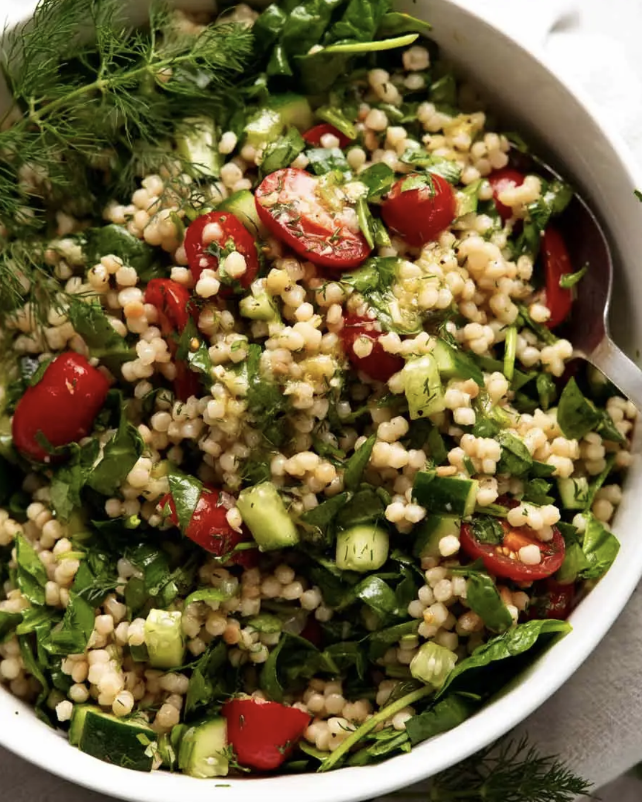

Pearl Couscous Salad

Description
Pearl couscous is the giant form of the more common tiny couscous. Also known as gourmet and Israeli couscous, it’s like little pearls of pasta – hence the name! Makes a fabulous salad and is a great one to take to gatherings for something different that never fails to impress.
Ingredients
COUSCOUS
- 2 tsp olive oil
- 1 garlic clove, minced
- ½ small onion, finely chopped
- 1 ½ cups (250g/ 8oz) pearl couscous (aka gourmet or Israeli couscous, Note 1)
- 1 ½ cups vegetable or chicken broth, low sodium
- 1 cup water
SALAD
- 2 cucumbers, diced (about 2 cups)
- 250g / 8 oz cherry tomatoes, halved (about 2 cups)
- 3 cups baby spinach, finely sliced (Note 2)
- ¼ cup coriander / cilantro, finely chopped (or sub with parsley)
- ¼ cup dill, finely chopped
LEMON DRESSING
- 2 tsp lemon zest
- 2 tbsp lemon juice
- 1/4 cup extra virgin olive oil
- 1 tsp Dijon mustard
- 1 garlic clove, minced
- 1 tsp sugar, optional
- 3/4 tsp cooking / kosher salt
- 1/2 tsp black pepper
Steps
COUSCOUS
- Sauté onion & garlic - Heat oil in a large saucepan or small pot over medium high heat. Add garlic and onion, saute until the onion is translucent and starting to brown.
- Couscous & broth - Add couscous and stir, cooking for 1 minute. Add broth and water, bring to a simmer. Then place the lid on and turn the heat down to medium low so it is simmering gently.
- Cook for 10 minutes until the liquid is absorbed and the couscous is cooked through but still firm. Use a fork to separate the couscous, then transfer into a large bowl to cool. (It will form a sticky block but don't worry, it will separate when tossed with Dressing).
SALAD
- Dressing - Place Dressing ingredients in a jar and shake well.
- Toss! - Add Salad ingredients into the bowl, pour over Dressing and toss. Serve at room temperature.